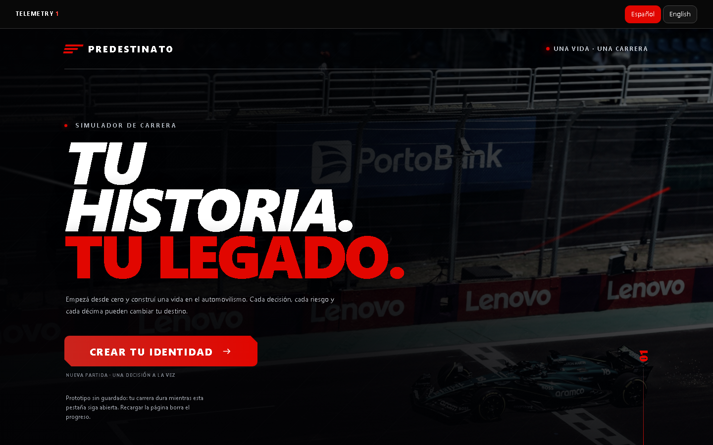
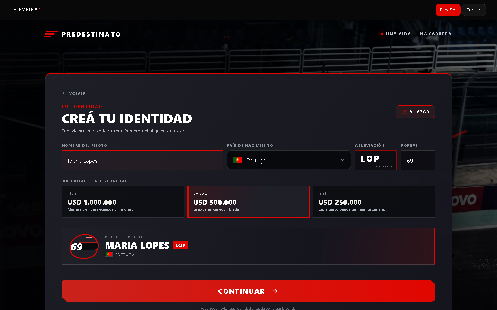

Una vida deportiva hecha de decisiones conectadas.
Predestinato nació de una pregunta personal: ¿cómo convertir todo lo que me atrae del automovilismo en un juego donde cada decisión construya una carrera distinta? El resultado empieza en el karting, abre rutas hacia monoplazas, turismos, rally y resistencia, y conecta rendimiento, dinero, reputación, contratos y riesgo hasta el retiro.

La carrera no es una escalera única hacia Fórmula 1.
El mercado mezcla renovación, fórmulas y alternativas en turismos, rally o resistencia. El jugador puede construir una trayectoria válida sin llegar a F1, cambiar de disciplina en la madurez o terminar fuera del automovilismo por una economía mal administrada.
Cinco estadísticas y Forma
Velocidad, ritmo, consistencia, resistencia y agresividad evolucionan con entrenamiento, edad y decisiones. La Forma temporal va de −5 a +5.
Pagar, cobrar y negociar
El karting exige inversión; las categorías profesionales incorporan salarios y primas. Sponsors, staff, tienda y contratos compiten por el mismo capital.
Mercados con alternativas
F4, Regional, F3, F2 y F1 conviven con TCR, rally, GT4, LMP3, WEC, IndyCar y otras salidas ficticias adaptadas al progreso.
La identidad ya es una decisión de juego.
El flujo inicial pide nombre, país, abreviación, dorsal y dificultad económica. No son campos sueltos: alimentan la presentación del piloto, las ofertas regionales, la identidad de la interfaz y el margen de error financiero.
Tres ofertas, no una respuesta correcta
El mercado inicial presenta equipos regionales elegidos al azar y niveles de inversión diferentes. El objetivo no es encontrar “el mejor”, sino aceptar una combinación de costo, oportunidad y riesgo.
Una curva visible
La dificultad cambia el capital inicial. La interfaz muestra la consecuencia antes de empezar para que el fracaso económico sea una decisión comprensible y no una sorpresa escondida.

Cada temporada modifica la siguiente.
Carta de pretemporada
Una decisión altera atributos permanentes, temporales, capital o riesgo. El mazo contiene 70 cartas normales, 20 raras y 10 doradas.
Agenda breve
La temporada contiene entre una y tres interacciones para sostener ritmo: decisiones narrativas, pruebas y eventos especiales.
Resultado y liquidación
Posición, victorias y puntos activan primas, sponsors, fama, valor de mercado y el cierre contractual.
Mercado y evolución
Edad, Forma, categoría y desempeño cambian ofertas, duración, salarios y rutas posibles para el año siguiente.
El detalle importa cuando cambia la estrategia.
Ventana móvil de tres años
F1 exige 40 puntos, edad mínima y temporadas elegibles. El HUD muestra qué requisito falta y evita una barrera invisible.
Siete puntos por temporada
Cada punto suma 0,2 internamente. Los decimales se conservan en cálculos, aunque el panel principal muestre valores redondeados.
Desarrollo, plenitud y caída
La curva acelera en formación, sostiene una plenitud base y luego concentra el deterioro en resistencia, ritmo y agresividad.
Protección acumulativa
Contratar cuidado físico temprano puede extender hasta tres temporadas la plenitud y reducir una caída de resistencia.
Presupuesto y paciencia
Las contraofertas conectan fijo, bono, duración y exigencia. Tres rechazos terminan la negociación.
Logros entre disciplinas
Mónaco, Indianápolis, Le Mans, Montecarlo y Dakar alimentan colecciones independientes de victorias y campeonatos.
Simular carreras completas para mejorar el diseño.
La auditoría combinó pruebas de navegador con 270 carreras sembradas —tres dificultades, tres niveles de costo inicial, tres perfiles de habilidad y diez semillas— y produjo 8.825 temporadas terminadas.
| Dificultad | Carreras | Llegaron al retiro | Eliminación financiera | Llegaron a F1 |
|---|---|---|---|---|
| Fácil | 90 | 90 | 0 | 59 |
| Normal | 90 | 80 | 10 | 58 |
| Difícil | 90 | 8 | 82 | 8 |
Esas simulaciones convirtieron el balance en algo observable: permitieron ajustar economía y progresión, además de detectar parrillas mezcladas, rivales que no envejecían, totales de victorias imposibles y estados contractuales duplicados. Diseñar el juego también implicó construir herramientas para entender cómo se comporta.
Traducir una carrera deportiva completa a estados que el juego pueda recordar.
El desarrollo partió de separar identidad, rendimiento, economía, contrato, calendario y logros. Cada módulo modifica una parte de la carrera, pero todos leen un estado común del piloto. Esa arquitectura permite que una carta de pretemporada afecte una negociación futura, que la edad cambie el entrenamiento y que una victoria altere fama, dinero, mercado y colecciones al mismo tiempo.
El ciclo anual funciona como una máquina de estados. La temporada comienza con preparación, abre una agenda breve de decisiones o minijuegos, simula el resultado, liquida primas y costos, actualiza progresión y finalmente construye el mercado siguiente. Guardar cada transición vuelve posible inspeccionar errores y evita que una misma recompensa se aplique dos veces.
El contenido también se diseñó como sistema. Las cartas comparten una estructura de rareza, condición y efecto; las categorías describen costos, premios y requisitos; los equipos ficticios se agrupan por región y nivel; los minijuegos devuelven resultados comparables al motor principal. Agregar contenido no exige inventar una lógica nueva para cada pantalla.
Modelar estado
Definir qué recuerda la carrera y qué variables cambian por edad, decisiones, resultados o contratos.
Construir contenido
Expresar cartas, categorías, equipos y eventos mediante estructuras reutilizables y reglas compartidas.
Resolver temporada
Procesar interacciones, rendimiento, economía y mercado en un orden que mantenga consecuencias consistentes.
Persistir y auditar
Guardar transiciones y sembrar simulaciones para reproducir exactamente una trayectoria problemática.
La profundidad aparece cuando sistemas simples empiezan a empujarse entre sí.
Una decisión resulta interesante cuando no mejora todo a la vez. Invertir en entrenamiento puede reducir el margen financiero; aceptar un contrato seguro puede cerrar una ruta deportiva; buscar una categoría más exigente aumenta prestigio y también riesgo; cuidar el físico temprano sacrifica capital presente para prolongar el rendimiento futuro. El diseño conecta esas tensiones para que cada trayectoria cuente una historia distinta.
Pocas decisiones visibles
Entre una y tres interacciones por temporada mantienen avance rápido mientras las consecuencias se acumulan durante décadas.
Un recurso con varios destinos
Inscripción, staff, tienda, fisioterapia y negociación compiten por el capital y convierten el presupuesto en estrategia.
Curva con etapas
Desarrollo, plenitud y declive cambian el valor de entrenar y obligan a pensar cada inversión según la edad.
Ofertas con contexto
La categoría, la Forma, el rendimiento y la región construyen opciones distintas en lugar de una escalera automática.
Reglas que se pueden leer
El HUD muestra requisitos, cambios de atributos y consecuencias económicas para que el jugador pueda aprender el sistema.
Historias reproducibles
Las semillas convierten una carrera extraña en un caso que puede repetirse, corregirse y volver a comprobarse.
Un sistema preparado para seguir creciendo.
- Carreras persistentes: el guardado puede convertir cada trayectoria en una historia que se retoma, comparte y compara.
- Más formas de jugar: entradas alternativas y un modo asistido pueden ampliar el alcance de los 16 minijuegos.
- Balance adaptable: los datos de simulación permiten afinar la economía y definir con intención qué experiencia ofrece cada dificultad.
- Historia deportiva: un registro carrera por carrera puede transformar resultados, contratos y rivalidades en una biografía consultable.
- Universo propio: equipos, contratos, montos y resultados forman una ficción automovilística capaz de crecer sin perder coherencia sistémica.